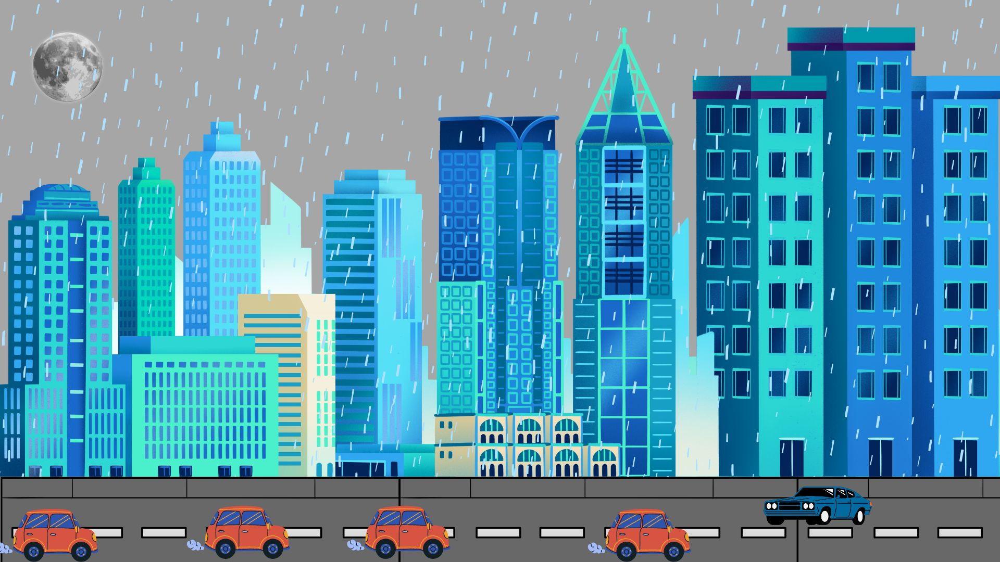
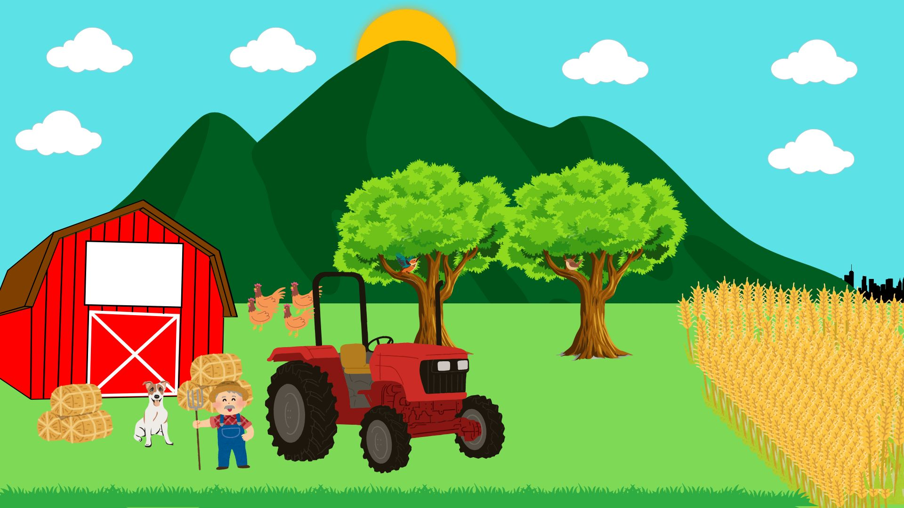

Descrição da seção 3.
O campo e a cidade representam dois mundos contrastantes. O campo é tranquilo, ligado à natureza e à vida simples, com paisagens vastas e silenciosas. Já a cidade é agitada, com ritmo acelerado, diversidade e grandes oportunidades, mas também com barulho e pressa. Enquanto o campo oferece paz e conexão com a terra, a cidade proporciona dinamismo e inovação. Ambos têm seus valores, e o equilíbrio entre eles pode oferecer uma experiência rica e complementar.